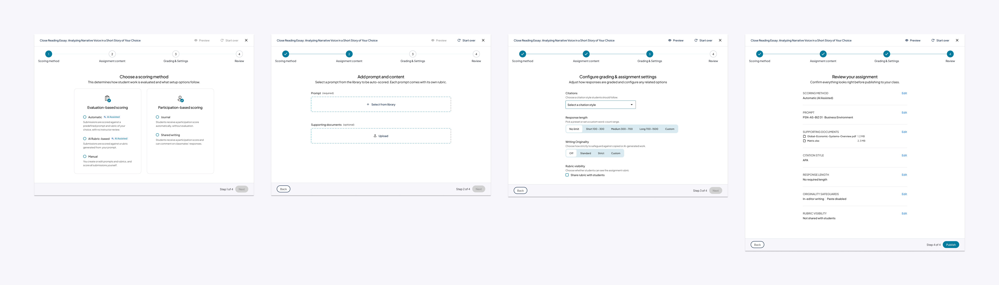
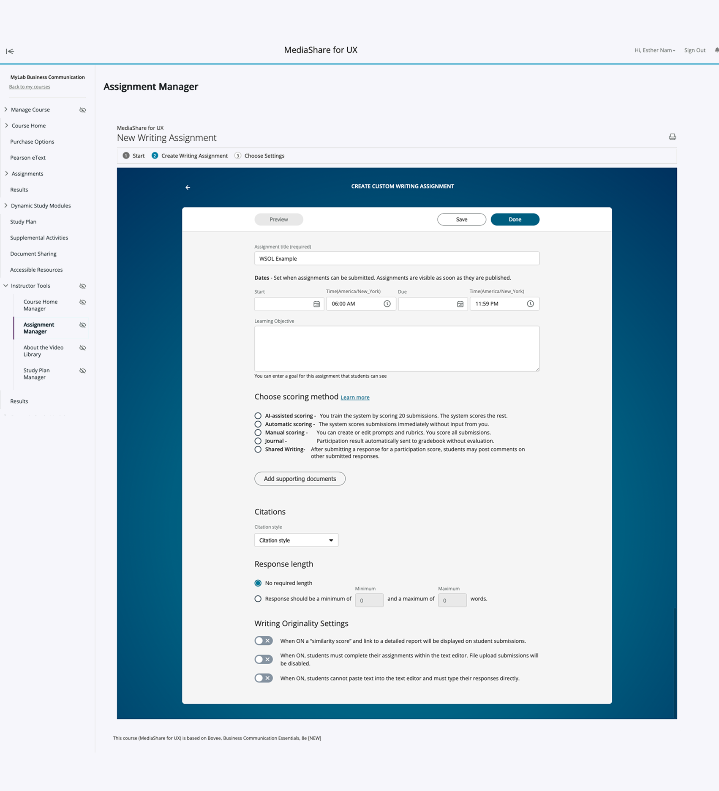
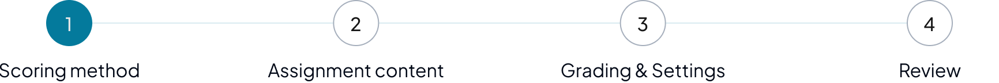
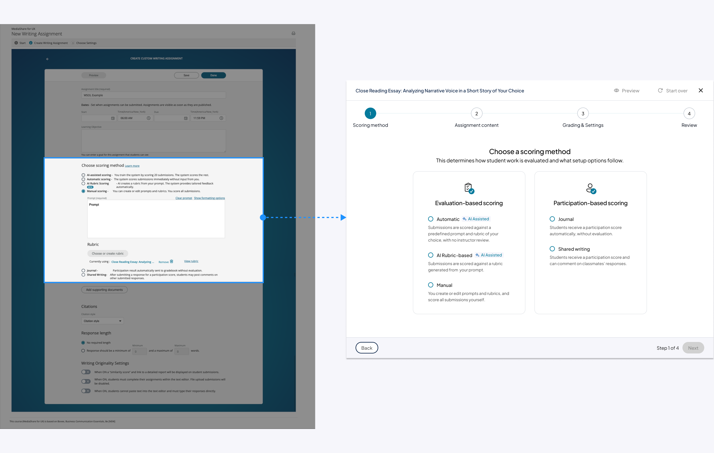
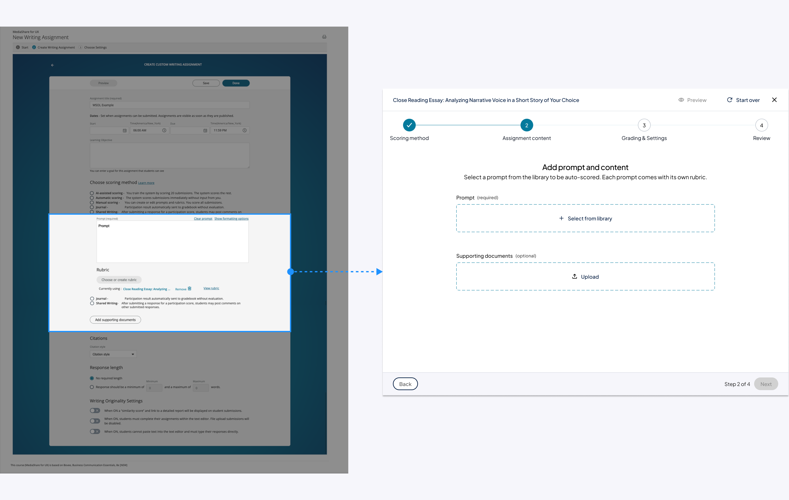
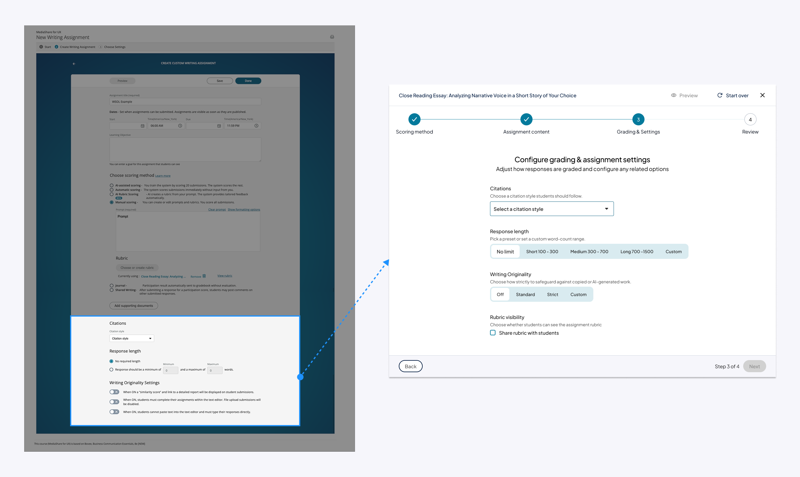
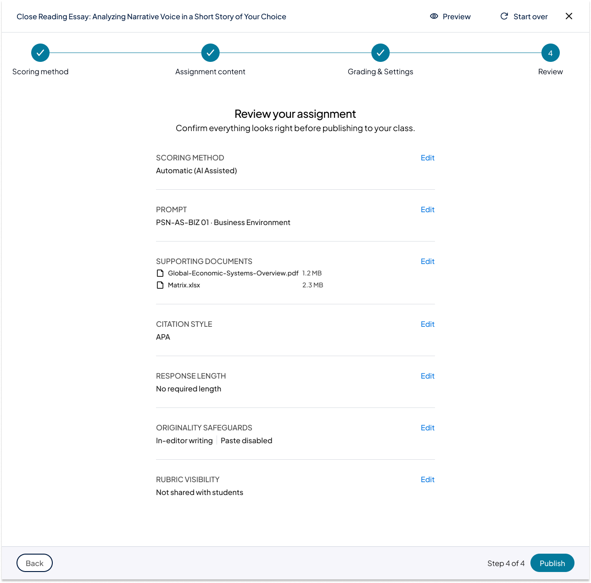

Restructuring assignment creation around how instructors actually think.
I redesigned the assignment creation flow in Writing Solutions, an instructor-facing assessment tool in beta. While the audit set the strategic foundation, I extended those findings to tackle the issues specific to Writing Solutions.

-
01
Reduced confusion during setup
The redesigned flow better matched instructor expectations and reduced the back-and-forth scrolling that defined the original page.
-
02
Clearer, scalable foundation for authoring across tools
The four-step pattern is reusable: Freehand Grader and other Generate products can adopt the same chrome and sequence rather than each inventing its own.
-
03
Worked within the system's constraints, not around them
Scoring method and content setup are technically linked for now. Respecting that constraint, the redesign made scoring choice the explicit first step, but in a clear and simplified manner.
-
04
Translated platform-level audit insights into structural workflow change
Demonstrated how strategic audit findings can turn into concrete IA decisions while taking underlying constraints seriously.
Writing Solutions is an instructor-facing assessment tool for creating and grading typed assignments, in beta release as part of Pearson's "Generate" portfolio. Following a platform-wide UX audit, the assignment-creation flow emerged as a key opportunity to address recurring issues around cognitive load, decision clarity, and misalignment with instructor mental models.
This case study focuses on the assignment-creation redesign. The audit gave me the strategic foundation, and I extended those findings to tackle the issues specific to Writing Solutions.
The existing assignment-creation page stacked every decision into a single scroll. Because some choices affected others downstream, users had to scroll back constantly to revise.

This forced instructors to context-switch constantly while scrolling up and down:
The structure conflicted with both:
- Learning design sequencing: Desired outcomes → assessment → feedback.
- Instructor mental models: Content first, grading implications later.
On top of that, a few high-impact decisions, like the choice between automatic and instructor-graded paths, carried consequences the page never spelled out. That left instructors confused, redoing work, and ending up with assignments that didn't behave the way they intended.
The platform-wide audit had already surfaced patterns that applied directly to this flow:
- Complexity was front-loaded instead of progressively revealed.
- Decision points lacked clear explanations of impact.
- Flow structure followed tool constraints rather than instructor mental models.
Assignment creation was a clean place to put those findings into practice. Read the audit case study →
Before designing the ideal flow, I had to account for a near-term system constraint: in WSOL, scoring method determines whether prompts are system-defined or instructor-authored.
Practically, that meant scoring intent had to be surfaced first, with content creation following within those constraints. The coupling may loosen long-term, but the near-term redesign had to work within it, and honor it visibly rather than designing around it.
- Reduce cognitive load at early stages.
- Make the consequences of major decisions explicit.
- Defer advanced or conditional options until they're relevant.
- Honor system constraints without letting them dictate the entire experience.
The redesign worked at three levels.
- Structural changes to the page itself, the chrome that wraps every step.
- A re-sequencing of the actual decisions into four steps.
- Visual treatment that followed Nebula, the up-and-coming design system. Since the department planned to update Nebula by the end of 2026, I designed against where it was heading, so the work would still be aligned after the update rather than need reworking.
Page-level chrome
Progress stepper at the top
A persistent 4-step tracker replaces the old single-scroll page. Users always see where they are and what's left.
Persistent footer with step controls
"Back / Next / Step X of 4" lives in a sticky footer. Replaces the original Preview / Save / Done buttons that disappeared the moment users scrolled.
Removed the iFrame scroll trap
The original page nested its form inside an iFrame, creating two scroll containers. Users frequently scrolled the wrong one. The redesign removes the inner container entirely.

The four steps
Scoring method
Based on the technical constraint around scoring method, I presented this option as the first step.
- Helper text sets downstream expectations.
- Visual treatment separates evaluation-based vs. participation-based scoring, and highlights which options involve AI assistance.
- All content-related actions (like choosing a prompt) are separated into step 2, with their settings pre-configured based on step 1.

Assignment content
Based on the Step 1 choice, instructors either select a system prompt (automatic / AI-assisted) or write their own (manual / journal / shared). Supporting documents and an optional learning outcome are added here.

Evaluation & feedback
Grading is configured: rubric (if applicable), submission expectations (response length, citations), originality / plagiarism settings, and feedback options.

Review & assign
Instructors confirm the full setup before making the assignment available to students, then return to scheduling.

Tying assignments to learning outcomes is good pedagogical practice, and Pearson's own guidance supports it. But in practice:
- Many instructors don't work this way day-to-day.
- Many courses already define outcomes elsewhere (syllabus, LMS, course settings).
- Forcing outcomes upfront measurably reduces adoption.
Removing the field entirely would weaken pedagogical alignment and limit downstream AI / analytics value; requiring it could frustrate instructors, slow authoring, and feel rigid. So I kept it optional within Step 2, the deliberate middle path.
Should scoring method really come before the assignment objective? Right now a technical constraint forces that order. The open question is whether AI's time savings justify it, or whether instructors should define what they're assigning first.
This question matters because time savings is core to the value proposition for Writing Solutions and the other "Generate" products. It's often what decides whether an instructor assigns an authentic assessment at all, rather than a traditional one. So if surfacing the AI path early helps instructors capture that value sooner, the current order may be worth keeping.
But early research, three rounds of interviews with distinct panels of higher-ed instructors, suggests instructors don't yet trust AI enough to commit to it that early. The next step I'd explore is twofold. First: are there ways to build that trust, through transparency, previews, or more control? Second, and just as important: is doing so worth it? If earning that trust unlocks the time savings instructors care about, the investment likely pays for itself. If it doesn't, the simpler answer may be to honor how instructors already think and let them define the assignment first.